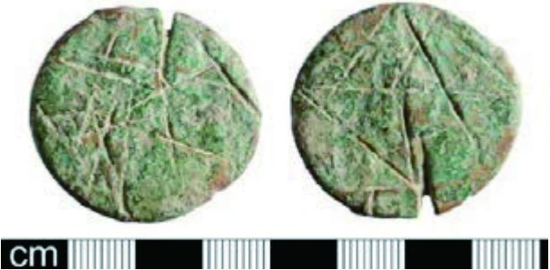

Roman Defacement or Mutilation of Images on Currency
Ancient Rome. Coins were scratched or damaged to deface the emperor’s portrait, directly challenging imperial authority.
A physical form of political dissent. It turned everyday currency into resistance and set a precedent for later currency-based activism.